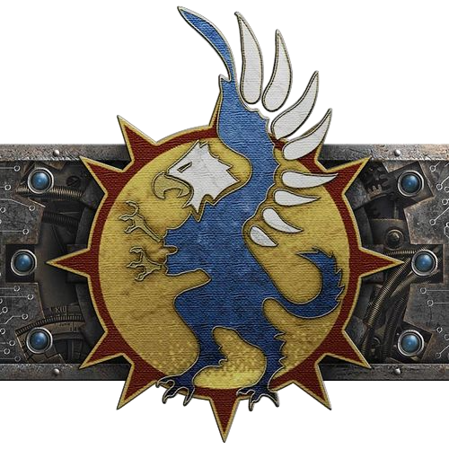

Legio Gryphonicus
The War Griffons

Axiom Battleline Maniple
Myrmidon Battleline Maniple
Venator Light Maniple
Corsair Battleline Maniple
Janissary Battleline Maniple
Regia Battleline Maniple
Lupercal Light Maniple